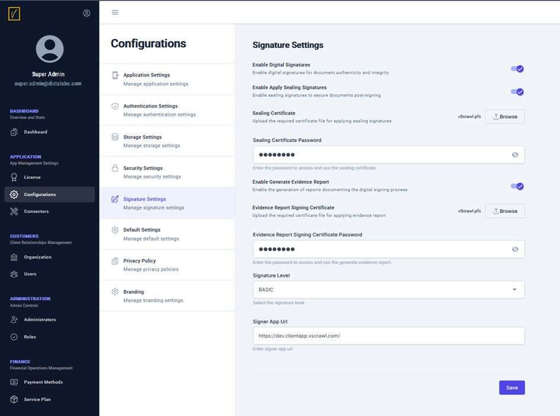

Signature Settings
Use the Signature Settings screen to configure various signature options within the vScrawl application.

Key Features
- Enable Digital Signatures: Enable digital signatures to be applied on user documents.
- Enable Apply Sealing Signatures: Choose this option to apply a post-sign company seal on user documents for added security.
- Sealing Certificate: Specify the certificate to be used for the sealing signature.
- Sealing Certificate Password: Enter the password for the sealing certificate.
- Enable Generate Evidence Report: Select this option to generate a digitally signed evidence report that records who shared the document, who signed it, the time of signing, and the signing method used.
- Evidence Report Signing Certificate: Specify the certificate to sign the evidence report.
- Evidence Report Signing Certificate Password: Enter the password for the evidence report signing certificate.
- Signature Level: Choose whether the digital signatures will be basic or timestamped signatures.